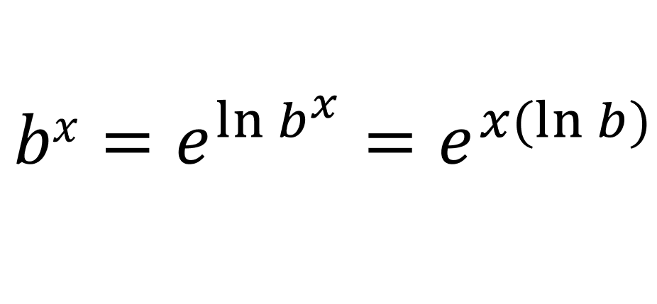
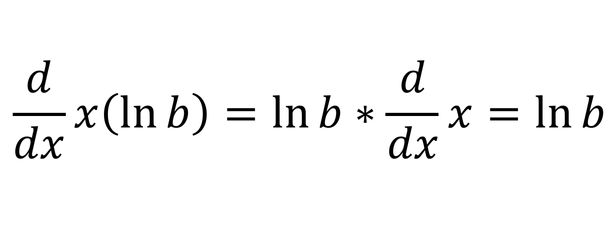
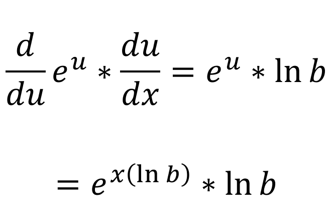
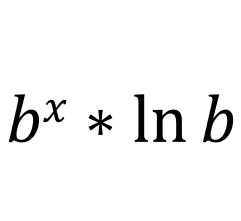

For this proof, it must be clear to you that [d/dx](ex) = ex. Also, bx can be written as:
Let [u = x(ln(b))] and lets differentiate u with respect to x:
We already know that the differentiation of eu is eu, so let [y = eu] and lets do [dy/du * du/dx]:
Which can be written as:
And that completes our proof.